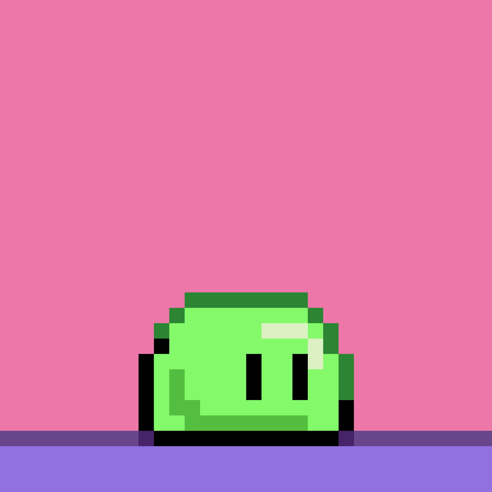

Videogames
 From childhood into adulthood, videogames have, and will always be, my favorite things to engage with.
The overall concept of videogames itself (especially online games) always impress me.
I love to dive into some online horror games with my friend when we're free and it's always a blast.